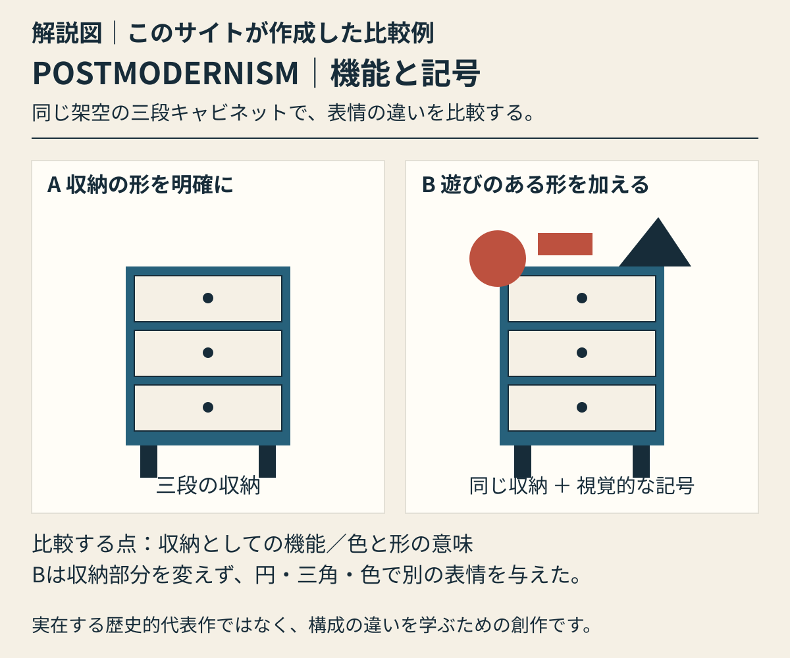

色と素材
鮮やかな色どうしのぶつかり合いや、繰り返す模様、異なる材料の組み合わせを見ます。落ち着いた表現の作品も含まれます。
本文公開・自作解説図1点 / 実作品画像は未掲載 · 2026-10-30
複数分野にまたがる歴史的潮流
Postmodernism
デザインに、いつでも誰にでも当てはまる正解はあるのでしょうか。ポストモダニズムは、その問いを投げかけた動きです。昔の形を取り入れること、いくつもの意味、飾りや遊びを、もう一度デザインの大切な問題として考えました。派手な色を使うだけの様式ではありません。
建築、製品、印刷物などのデザインでは、話題になった問題も時期も違います。「使いやすさや働きを否定した」とひとまとめにはできません。形が何を意味するか、どんな場所や状況で見られるかを、どう扱ったのかに注目します。
以下は観察のための問いです。すべての作品に共通する固定ルールや、未取得画像の実見結果ではありません。
鮮やかな色どうしのぶつかり合いや、繰り返す模様、異なる材料の組み合わせを見ます。落ち着いた表現の作品も含まれます。
昔の書体を取り入れたり、いくつもの声が聞こえるように文字を使い分けたりした例を見ます。別の表現を引用することや、重要な情報から順に読むという決まりを揺さぶることにも注目します。
古典的な形を変えたもの、円や四角などを使った遊び、意外な材料の組み合わせを探します。見慣れた形が、少し違うだけで別の意味に見えてきます。
いくつもの層を重ねること、昔の表現を取り入れること、あえてつじつまを合わせないことに注目します。そこからどんな意味を読み取るかは、見る人との関係でも変わります。
ORIGINAL EXPLAINER · 自作解説図
同じ架空の三段収納の二案。Bは収納構造を保ち、円・三角・赤い部材を追加して遊びのある表情を与える。
実在する代表作の画像ではありません。見るポイントを学ぶために、このサイトが作った例です。

解説図｜このサイトが作成した比較例。同じ架空の三段収納の二案。Bは収納構造を保ち、円・三角・赤い部材を追加して遊びのある表情を与える。 実在する歴史的代表作の画像・復元ではなく、特定作家の模倣でもありません。様式全体の定義や優劣を示す図ではありません。
考え方を確かめる美術館の資料 ↗ · 参照先がこの図を制作・監修したわけではありません。
解説図を大きく開く ↗作品の知名度や画像の入手しやすさだけで選びません。以下は理想代表候補と、その検証状況です。画像の利用許諾を確認できていないものは掲載していません。
architecture
昔からある建築の形を取り入れ、いくつもの意味を読み取れる住宅として見る候補です。
代表例として取り上げたい候補です。どの版か、いつつくられたか、誰の作か、なぜ代表例といえるかを、それぞれの一次資料で確認するまでは確定しません。
個別作品の一次確認待ち
furniture / laminate
家具の使い道、飾り、色、形が伝える意味の関係を考える候補です。
代表例として取り上げたい候補です。どの版か、いつつくられたか、誰の作か、なぜ代表例といえるかを、それぞれの一次資料で確認するまでは確定しません。
個別作品の一次確認待ち
architecture / civic building
昔の建築の要素を取り入れ、大きくして使う方法を、公共建築で見る候補です。
代表例として取り上げたい候補です。どの版か、いつつくられたか、誰の作か、なぜ代表例といえるかを、それぞれの一次資料で確認するまでは確定しません。
個別作品の一次確認待ち
graphic design / digital image
デジタル処理、人の体のイメージ、いくつもの層が重なる画面の関係を、グラフィックの作品で見る候補です。
代表例として取り上げたい候補です。どの版か、いつつくられたか、誰の作か、なぜ代表例といえるかを、それぞれの一次資料で確認するまでは確定しません。
個別作品の一次確認待ち
照明・プロトタイプ
V&Aがポストモダニズムの説明に使っている照明です。建築や書棚だけでなく、日常の製品から、メンフィス（Memphis）という集団と大きな動きの関係を考える候補です。
所蔵されているのは試作品です。量産されたものや、後の復刻とは区別します。メンフィス一つの集団だけでポストモダニズム全体を代表させず、別分野の候補も並べます。画像を実際に見て細部を分析する作業は、まだ行っていません。
個別の根拠資料 ↗COMPARE
メンフィス（Memphis）は、特定のデザイナー集団の名前です。ポストモダニズム全体を指すわけではありません。現代のネオ・ブルータリズム（Neo-brutalism）や、2000年前後の表現を取り入れるY2Kリバイバルも、それぞれ別の時代の動きとして見ます。
項目を横に並べる ↗READ TODAY
ブランドやウェブサイトで、異なる時代や様式を組み合わせる「折衷（せっちゅう）」の表現を読む手がかりになります。ただし、見た目が似ているだけで、考え方まで受け継いだとは断定できません。
概要は以下の所蔵機関・制作者の説明と、分析者自身の調査を参照。検索から返却された本文とページ直接閲覧は調査台帳で区別しています。代表作の個別裏付け、実画像取得、作品と写真の商用条件は別々の確認事項です。
この項目の収録実画像：0点（図鑑全体：27点）。参照・関連実作品はこの項目0点（図鑑全体2点）。代表作品画像セットの数には含めません。